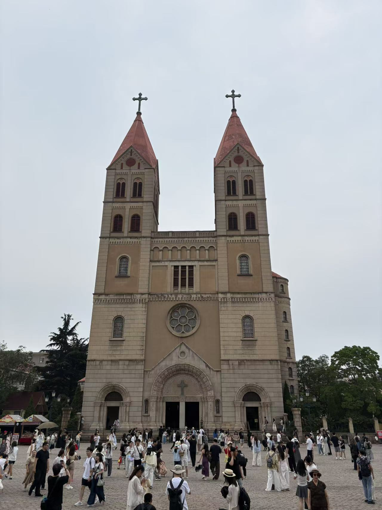

识别到：教堂主体
正在为教堂打包快递
TO: 我的地图
CHURCH / 01
CHURCH / 01
框住想留下的主体
我的地图一个快递包裹正在抵达
北园
河岸
我常走的路
MAP
DELIVERY
DELIVERY
从三维世界，带来一座教堂
景色范围CHURCH / SQUARE / TREES
SCENE CAPTURED这一片景色已被折叠
将景色置于扫描区域内
我的地图一片景色正在浮现
北园广场河岸
SCENE / 01
RECONSTRUCTING
RECONSTRUCTING
投影散去，建筑留在地图上
一帧景色把这座教堂交给小画家
OBSERVED
TODAY
TODAY
让景色先住进画框里
我的地图小画家正在作画
北园河岸广场
一笔一笔，留下一座教堂
PHOTO / 01
LIGHT SAMPLE从这一帧取一束光
LIGHT REFRACTED
让棱镜对准景色里的光
我的地图一束光正在抵达
北园广场河岸
照片里的光，在这里成为海市蜃楼
✦
主体锁定教堂正在穿过法阵
让魔法阵在景色背后显现
我的地图召唤仪式正在进行
北园广场河岸
✦
教堂从另一个瞬间，被召唤到这里
门的另一边，有人在等
选择一扇通往地图的门
我的地图任意门正在打开
北园广场河岸
门消失了，但它把教堂留了下来
NOTES
FROM TODAY
FROM TODAY
PHOTO / 07
PHOTO / 07照片已展开，等待折叠
桌上有一张刚刚拍下的照片
我的地图一架纸飞机正在靠近
北园广场河岸
照片落下，留下被看见的主体
心情色温温暖 · 金橙色
✦
MOOD COLOR / 08这一刻，是温暖的金橙色
让魔法棒读出这一刻的颜色
我的地图一束心情正在流动
北园广场河岸
✦
颜色找到落点，留下这一刻的心情
TO: MY MAP
08·27此刻
PERSONAL
MAP
MAP
POST
TO / MAP
把这一刻收进一枚邮票
我的地图快递员正在送一封信
北园广场
✉
07
来自此刻的信，已经送达
LIGHT SAMPLE / 10把这一帧凝成一颗钻石
让照片里的光慢慢结晶
我的地图小鸟衔着一束光飞来
北园河岸
小鸟放下钻石，也放下照片里的光
今天看见的远方
旧纸边缘，正好收藏这一刻
我的地图小小搬运队正在赶路
北园广场
MEMORY / 11
搬了很远，它们把这一刻稳稳放下
✦
FLOWER FRAME / 12把这一刻开成一朵花
让景色落在花心里
我的地图一枚花苞正在落下
北园花径
花苞扎根，重新开出那一刻
VIEW / 13把窗外的景色带走
此刻正停在窗外
我的地图一扇窗正在出现
北园河岸
窗户打开，远方成了地图的一部分
PERSONAL
CAMERA
CAMERA
FRAME / 14让光留在一格胶片里
复古相机已经对准这一刻
我的地图一卷胶片正在滚来
北园广场
胶片展开，光把教堂留在这里